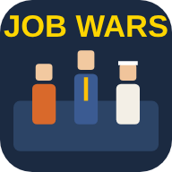
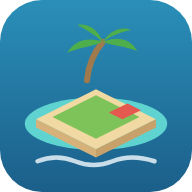

JOB WARS 3開発中JOB WARS 2 の防衛戦を、アニメ調の新しいグラフィックで作り直す版。
JOB WARS 2試作タワーディフェンス版。決まった入口から本社へ進む仕事の怪物を、道ぞいの設備と主人公で食い止める。
JOB WARS試作社会人サバイバーズ。職業の仲間を採用して部隊を育て、押し寄せる「仕事の怪物」から本社を守る。

Ocean Frontier3D・開発中海上の小さな集落で、釣り・流木拾い・建設をしながら集落を育てる 3D 版。
しおさい浮島2D 版。加工・住民・開拓・留守中の生産まで遊べます。